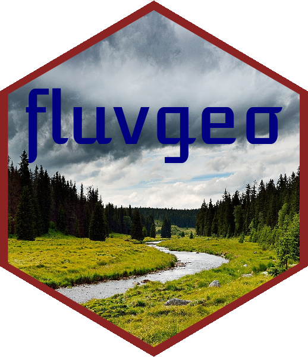

An R Package for Performing Fluvial Geomrphology Analysis

Description
This package contains a wide range of functions for performing fluvial geomorphic analysis. This R package is designed for use with the FluvialGeomorph ArcGIS toolbox. The FluvialGeomorph ArcGIS toolbox contains an tools that can be used to extract spatial data from high-resolution terrain data. The FluvialGeomorph ArcGIS toolbox depends on functions in this package to perform a wide range of fluvial geomorphic analysis:
- Calculate stream channel dimensions
- Calculate stream planform dimensions
- Produce reports of stream channel and planform dimensions
- Tools for choosing a bankfull elevation for ungaged streams
Funding

Funding for development and maintenance of FluvialGeomorph has been provided by the following US Army Corps of Engineers (USACE) programs:
- Flood and Coastal Risk Management
- Ecosystem Management and Restoration Research Program (EMRRP)
- Regional Sediment Management Program (RSM)
- Mississippi River Geomorphology and Potamology Program (MRG&P)
- Flood Risk Management Program (FRM)
- Engineering With Nature (EWN)


Latest Updates
Check out the NEWS for details on the latest updates.
Authors
- Christopher Haring, Fluvial Geomorphologist/Research Physical Scientist, U.S. Army Corps of Engineers
 https://orcid.org/0009-0004-3834-9811
https://orcid.org/0009-0004-3834-9811
- Michael Dougherty, Geographer, U.S. Army Corps of Engineers https://orcid.org/0000-0002-1465-5927
- Barrie Chileen Martinez, Geographer, U.S. Army Corps of Engineers https://orcid.org/0000-0002-6960-8167
Bug Reports
If you find any bugs using fluvgeo, please open an issue.